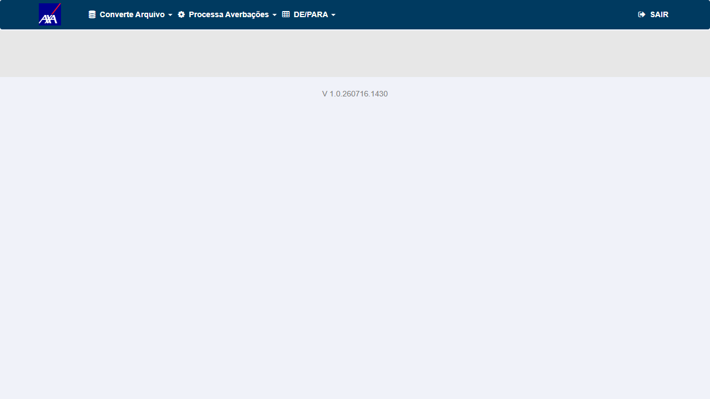
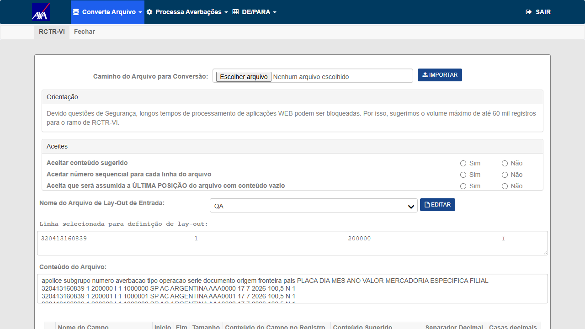
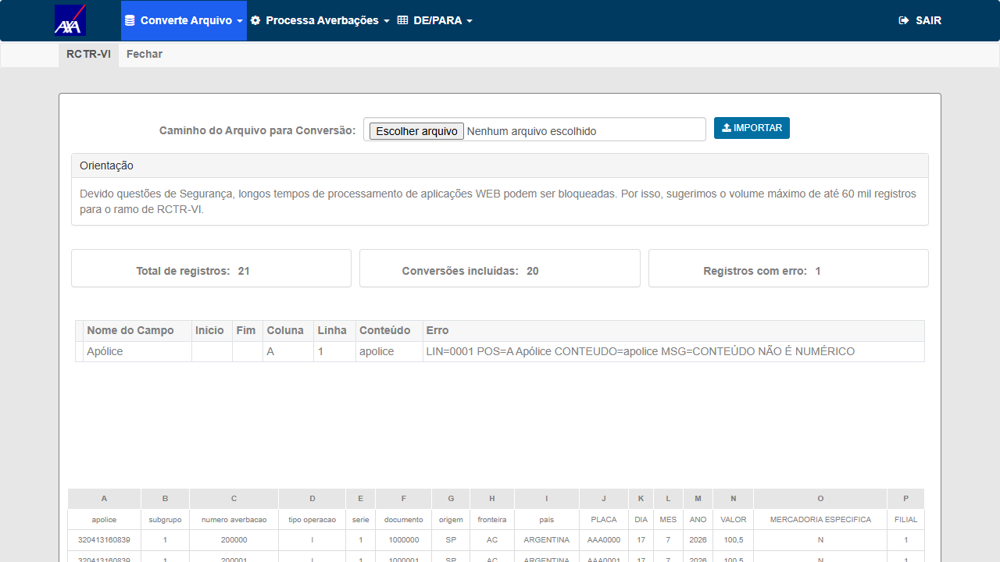
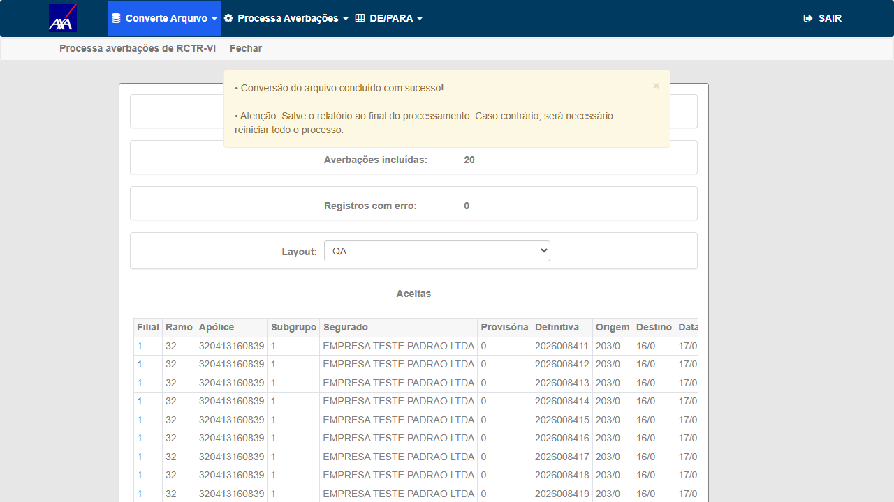
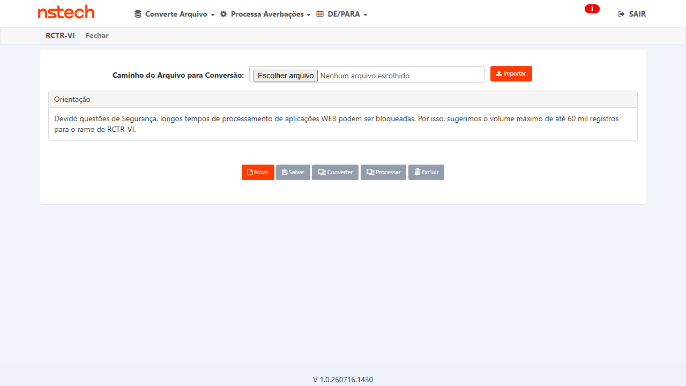
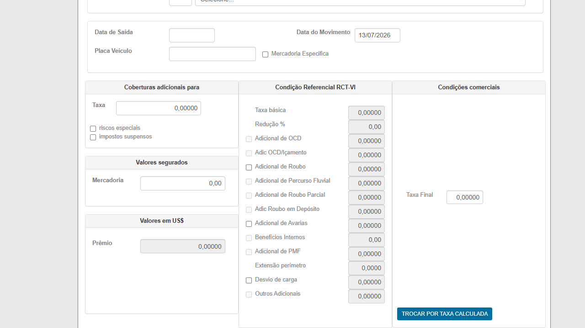
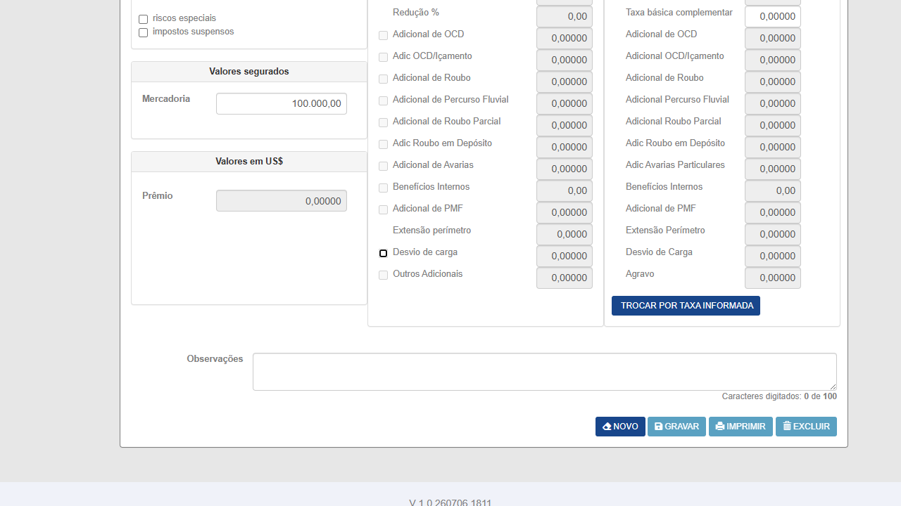
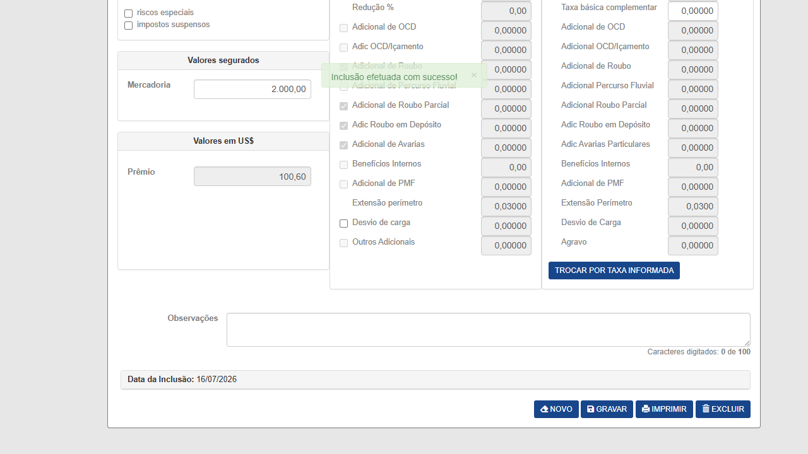

Descrição
Refactoring do conversor internacional RCTR-VI para uso de SqlBulkCopy e deleção em lote no processamento das averbações, eliminando o padrão insert/delete 1 a 1 (lento, sujeito a timeout em volumes altos). O guard AXA (não excluir registros de conversão durante o processamento) foi preservado. A alteração é exclusiva da etapa de processamento do conversor — a etapa de converter não mudou.
Matriz de Rastreabilidade — Critério de Aceite → CT
| Critério de Aceite | CT | Resultado |
|---|---|---|
| BulkCopy no conversor RCTR-VI (paridade funcional) | CT-RVI-001, 002 | ✅ Aprovado |
| Processar ≥ 7.000 registros sem timeout | CT-RVI-003 | ✅ Aprovado |
| Guard AXA mantido (conversão não excluída no processamento) | CT-RVI-004 | ✅ Aprovado |
| Solução escalável para seguradora sem indicativo (KOVR) | CT-RVI-005 | ✅ Aprovado |
| ConversorController ramo 32 (Exportação) | CT-RVI-006 | 🛑 Reprovado (fora de escopo) |
| Performance — mesma apólice | CT-RVI-007 | ✅ Aprovado |
| Performance — múltiplas apólices | CT-RVI-008 | ✅ Aprovado |
| Processamento simultâneo — 2 usuários sem serialização | CT-RVI-009 | ✅ Aprovado |
| Motor de cálculo RCTR-VI (IS × Taxa ÷ 100) | CT-RVI-010 | ✅ Aprovado |
| Fluxo completo (averbação → emissão) | CT-RVI-011 | ✅ Aprovado |
Pré-requisitos
- Ambiente: CITWEB HML AXA (principal) e KOVR (regressão) — login FRED (operador) e QA (2º usuário, concorrência).
- Massa RCTR-VI (ramo 32) gerada por script
testes-automatizados/pbi-7471/: arquivos XLSX de 20 e 7.500 registros, documentos inéditos, apólices vigentes confirmadas por SQL. - Layout de entrada
QAcadastrado no Conversor (DE/PARA). Fluxo: selecionar arquivo → Importar → Não (mantém XLSX) → layout QA → Converter → Processar.
Positivo · Smoke
AXA HML, build V 1.0.260716.1430; arquivo RCTR-VI de 20 registros (apólice 320413160839, ramo 32).
- Login AXA HML (FRED) → menu Conversor de Arquivos.
- Converte Arquivo → RCTR-VI → confirmar aviso CNSEG (Sim).
- Selecionar arquivo (20 registros) → Importar → Não → layout QA → Converter.
Conversor acessível; conversão conclui sem erro exibindo os registros convertidos.
V 1.0.260716.1430. Conversão: 21 lidos, 20 convertidos, 1 rejeitado (cabeçalho), sem exceção/timeout.


Positivo · Regressão do fix
- A partir da conversão do CT-001, clicar Processar → tela de Processamento (layout QA) → Processar.
- Aguardar a mensagem de conclusão e conferir os contadores.
Processamento conclui com sucesso, criando as averbações. Sem o HTTP 500 que era o defeito original.
"Conversão do arquivo concluído com sucesso!" · 20 Averbações incluídas, 0 erro, sem HTTP 500. Averbações 2026008411+ (apólice 320413160839).
- Importar arquivo de 7.500 registros (mesma apólice) → Não → layout QA → Converter.
- Processar e aguardar a conclusão; conferir paridade (Aceitas + Rejeitadas = total).
Conversão/processamento de ≥ 7.000 registros conclui sem timeout ou erro.
Para a AXA, o sistema pula a exclusão dos registros de conversão durante o processamento (guard nomeEmpresa != "AXA"). Este CT confirma que o refactor BulkCopy preservou esse comportamento.
- Após processar o arquivo de 7.500 (CT-003), consultar via SQL:
SELECT COUNT(*) FROM tb_lay_out_cvr_tmp_act_int_cit WHERE u_apo_pnc=320413160839 AND c_rmo=32 AND u_doc_ini_rvi BETWEEN 1100000 AND 1107499.
Os registros de conversão permanecem na tabela temporária após o processamento.
tb_lay_out_cvr_tmp_act_int_cit após o Processar concluir. Guard AXA ativo e preservado no refactor.- Login KOVR HML (FRED) → Conversor de Arquivos → Converte Arquivo → RCTR-VI (Sim).
- Confirmar que o formulário carrega no build atual.
Conversor RCTR-VI acessível no KOVR; o deploy não quebrou a seguradora sem o indicativo (usa o fluxo antigo, não alterado pelo guard AXA).
V 1.0.260716.1430 (mesmo binário do AXA). Obs.: convert/process completo não exercido no KOVR — tenant sem apólice ramo 32 vigente (33 existentes, todas canceladas).
- Conversor → Converte Arquivo → Exportação → selecionar arquivo → Importar → Não → layout
NOVO 19122025→ Converter.
Conversão da Exportação conclui sem erro.
/Conversor/Conversor/Converter retorna "Ocorreu um erro inesperado! Por favor contacte o administrador do sistema." (HTTP 500).Conclusão: defeito pré-existente da Exportação, FORA do escopo do PBI-7471 (não é regressão do refactor RCTR-VI/BulkCopy). Decisão de Wesley (17/07): correção em refatoração própria da Exportação — não bloqueia a homologação do PBI-7471.

Processamento de 7.500 registros da mesma apólice conclui sem timeout; tempo por registro dentro do aceitável.
Processamento de 7.500 registros distribuídos em várias apólices conclui sem timeout (sem penalidade de troca de apólice).
- Internacional → Averbação → RCTR-VI. Informar apólice/subgrupo com CC, IS da mercadoria e a rota.
- Conferir o prêmio calculado:
Prêmio = IS × Taxa Total ÷ 100; tarifária ≥ comercial; adicionais somente quando marcados.
Prêmio calculado conforme a fórmula, com os adicionais da CC.
IS 100.000 × Taxa Total 0,14 ÷ 100 = 140,00 (Básica 0,04 + Roubo 0,05 + Avarias 0,02 + Ext. Perímetro 0,03); tarifária = comercial; adicionais automáticos da CC. Motor de cálculo fora do escopo do refactor (conversor BulkCopy); resultado do teste de 16/07 no build idêntico 260716.1430. Formulário RCTR-VI reconfirmado acessível em 17/07.

- Criar subgrupo + CC na apólice RCTR-VI; criar averbação manual e conferir o prêmio.
- Emitir/processar o fechamento e conferir a persistência.
Fluxo E2E conclui: averbação gravada com prêmio correto e emissão processada.
